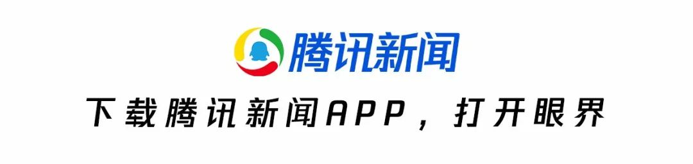
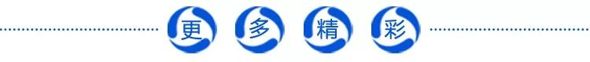
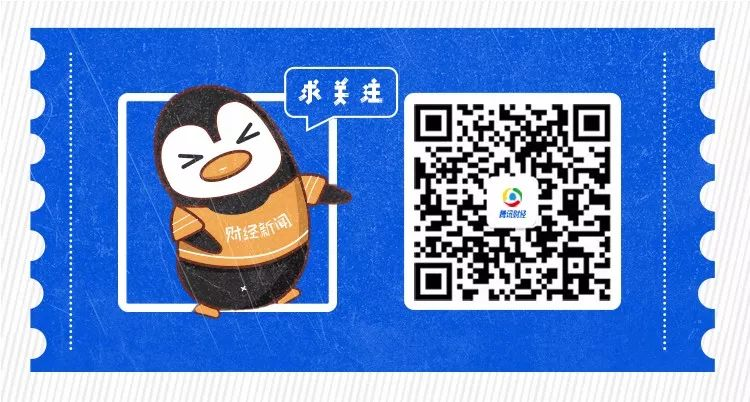

一位武汉诗人的小镇隔离日记：同事昨天感染了，从崩溃到重生 | 深网
原文链接 备份链接 作者 | 谈骁 (武汉诗人，春节自我隔离在潜江小镇。) 编辑：康晓 出品｜深网·腾讯小满工作室 欢迎下载腾讯新闻APP，阅读更多优质资讯 编者按：通过湖北各城普通民众的视角和抗疫日记，记录这一段我们永不会忘记的历史。封 …

对于封城，虽然心里有准备，但没想到来的如此之快。
腾讯新闻《潜望》 特约作者 何品慧 编辑 刘鹏
我是一名土生土长的武汉人，家住在离疫情源头武汉华南海鲜市场不足三公里的地方，在疫情最初发现到现在为止，在武汉历经了全过程。这段时间，我从毫不在意，到逐渐慌张，再到多次濒临崩溃。
1月23日，事态步入最严重阶段：武汉宣布关闭所有航空、火车、大巴、地铁等离汉通道，以决绝的方式阻断一切交通。如今封城五日过去，我在自我隔离中产生的自我怀疑、心情起伏中逐渐平静下来，唯一不确定的是家里的生活用品如果耗尽是否会有保障，但也只能尽自己的微薄之力，做一些记录，以及不出门，就是普通人所能做到的最大贡献。
回想这场风暴的最初——2019年12月12日，第一名病患被发现，但对于我而言只是一条普普通通的社会新闻，一眼便略过去了。
2019年12月31日，朋友圈开始疯传带有武汉的一份红头文件，向内部通报病情，但官方此时并未发声，并积极辟谣，在隔天查处了8名发布、转发关于肺炎不实消息的网友，于是乎这个新闻再次被当做饭后谈资翻篇了。
后来，在陆陆续续的通报中，我慢慢关注此事，但是思想上、行动上却并没有予以重视。我，一个武汉市民，依然乘坐拥挤的地铁，在某培训机构上课准备市考。但这期间，因碰巧遇到的，亦或说是真实存在于武汉，一些“细枝末节”的情况，影响着我对整个事件的认知。
1月14日，父亲醉酒，无奈我与我妈两人拖着我爸去了离家最近的医院，武汉市中心医院（后湖院区），也是最早被检查出肺炎患者的医院。
虽然之前我是知道这家医院的种种情况，但是基于离家近的方便之处，我们还是踏入了医院的大门。回想当初景象仍令我震惊：接近凌晨12点，医院的急诊大厅人声鼎沸，医护人员那时并未全副武装，但是异常多的人还是让我稍有警觉。一名医生告诉我，当天收治了40多名“疑似流感”患者。
但忙碌中所有人都没有戴口罩。我妈迅速地抢到一张空床位让我爸能躺着休息。我对这些来来往往的充满了莫名的警惕，虽然不知道是什么病，但身处其中就感觉半只脚踏入了鬼门关。于是，我临时找医生要了三个口罩，等我爸挂水之后立刻就逃回了家。这也是第一次跟潜在的疫情接触，但回家后那种害怕的感觉也完全留在了医院，并未多想。
去过医院后第二天晚上，接到外地朋友的电话，告诉我江苏省已经启动预案，让我注意安全。我突然醒悟过来，感觉事态的严重，赶紧购置了口罩、酒精棉等东西。那时候医疗用品供应充足，价格也算合理。
当时，我跟爸妈说出门一定要带口罩，他们一笑置之，把我给他们放在包里的口罩当做“护身符”。接着我又急忙地给两边老人家都送去，可收到的反馈都是无情的嘲笑——“新闻没报道，没有那么严重；我们身体很好，不需要口罩。”好像全世界的人都不着急，只有我一个人干着急。
身为一个新闻系的学生，真的很生气，但是也只能急切地等官方媒体可以早日报道，让年长一辈的人早日意识到问题的严重性。
1月20号晚上晚上钟南山院士接受央视采访，官宣境内累积感染218例。一时间武汉炸开了锅。我当晚熬夜看完了非典的纪录片，整理好非典发生时间线——11月发现，2、3月爆发、5月病毒自动消失，了解了大概情况后的我，久久不能入睡。隔天我爸妈就自觉的戴口罩出门，而我在路上也一直在辨认大家的口罩是否佩戴正确（N95/KN95、医用外科口罩预防效果最佳）。我当时长舒一口气，感觉大家都已经认识到问题的严重性，于是继续在拥挤的地铁上通往培训机构，穿过来来往往的人群，继续我的课程。
回想起来，当时培训机构里很多工作人员都有发烧和咳嗽感冒的症状，但依然坚持上班。甚至班里有个发烧请假的同学，伴着咳嗽的声音仍回到教室正常上课。空气中没有消毒水的味道，一切依旧如常。在爆发疫情之后，我曾和老师商量是否能够暂停上课，也被认为是无理取闹而草草了事。但当又有一位同学请假离开时，我慌了神似的赶紧收拾东西飞跑出教室。回头望向那幢楼的时刻，我第二次有出逃的感觉。
我决定不再去上课培训，也决定不出门了，但是又想购置一些东西在家囤货，无可奈何去了一趟超市。在超市门口吃早点的时候，看着一个人被120从小区活生生地抬了出去，我吓得魂都飞了，赶紧拉着我妈快步离开。虽然不知道是否是肺炎病患，但是太多朋友圈的谣传真正在眼前上演的时候，内心总归是颤抖的。
购买生活用品去的是硚口区的某会员超市。或许是因为消费人群层次较高的缘故，大多数人都配置了正确的口罩，但是我发现他们的员工却仍戴着薄薄的不合规格的口罩。中午出去用餐的时候，在我的提示下服务员才戴上了口罩以保证“表面上”的心理安慰。
快到家了，想着这几天有气短的症状，也不知是被吓的还是怎样，去家对面的药店买药。只见药店里都是老人家们在买药，我低着头快速走到柜台，询问导购医师奥司他韦放在哪，只见她没有戴口罩，一边咳嗽一边帮我拿出药，这时其他买药的老人又传来同样的咳嗽声，当时我就感觉天要塌下来了一样，脑子里一片空白，头也不敢抬，好像头低的越低，就可以跟他们拉开距离似的，胡乱地付完钱就匆匆从药房跑出来。
这是第三次，也是最后一次出逃的感觉。我回到家后彻底崩溃了，抱着我爸大哭了一场，跟他们嚷着说我不出门了，让他们取消了所有的年饭。
我家离武汉华南海鲜市场实在太近了，属于重灾区域，这一千多例潜在患病人群，会有多大的概率在我生活范围之内？
从小以武汉为骄傲的我，这一刻却无比想逃离武汉。我朦胧却又清楚地看到以后的事态会怎样发展。现在很多事情已不能正常化的解决，一切都处于紧急状态。封城切段一些传染源，或许是最佳的解决方案。
对于封城，虽然心里有准备，但没想到来的如此之快。
本来估计是春节过后才会强制施行。赶紧兵荒马乱地打开手机一通乱买，从天猫超市到美团外卖，陆陆续续地下单、被商家退掉再找店下单。当五十块一个包菜的图片出现在朋友圈时，我真的很难相信所谓的“应援”。明明昨天像逃难似的买半车的东西，却总嫌不够，来来回回地清点，看差些什么。
一早上过早（武汉俗称吃早点为过早）时，我跟爸爸妈妈很严重地说明了事情的状况，让爸爸盘一下家里的菜，每天按营养分配，让妈妈每天做好家里的卫生，早晚用84进行消毒。爸妈还是似笑非笑地看着我，闷闷地点头。
当我提议拿小黑板每天列清单，写写每天要做的事情时，我爸真忍不住笑了，我妈立马拍了他一下，示意让他在表面上给我点尊严。我当下就生气了，摔筷子就走！关上房门的那一刻，叹气：唉，明明是自己耍小孩子脾气。
整理好心情，打开手机陆陆续续给外公外婆爷爷奶奶朋友打电话嘱咐他们别出门。中间就接到外卖的电话，我赶紧让爸爸换上外出衣服，带好口罩下楼拿包裹。看着爸爸下楼拿东西的背影，我不仅想到朱自清的那段话，“这时我看见他的背影,我的泪很快地流下来了”。刚刚我还跟他置气，但爸爸是家里的顶梁柱，为我们的家庭挡住外面一切风和雨。
爸爸很快就上来了，我和他一起整理放在房门外的东西，一个个擦好再拿进屋子，他又赶紧下楼把外面的包装袋扔到垃圾桶，来来回回跑了几趟。爸爸前脚进门，我后脚就让他把衣服换了，并将外衣放在凉台上吹着。
好不容易折腾完了，又听到咚咚的敲门声，我赶忙趴在门上看猫眼，是一个没有戴口罩的老婆婆！我左右为难，不想开门。敲门声越来越急促，我妈赶紧让我快开门，我爸起身越过我就准备开门，我赶紧给他拿口罩，只见那婆婆已在门口朝我爸喊道：“你家又漏水到楼下了。”我心里一急，现在是扯这事的时候吗？我立马把我爸往里扯，搪塞完婆婆便关上门，勾住我爸，奔向厕所赶紧用盐水漱口。
紧接着，接到了大学同学的电话，生平第一次做了简单的电话采访，尽量详细地把我知道的看到的事情告诉她。这时我又听到敲门声，推开房门就看到我爸和婆婆两人都没戴口罩站在屋门口争吵，我赶紧跑出去死劲地拽我爸，我爸把我往门里一推，跟我说“这事情总要说清楚的，里面去！”顺势就把门关上。我一下子崩溃了，一边急着喊我妈劝劝我爸，一边连忙拿上一个口罩，让他戴上。废了九牛二虎之力连拖带拽把我爸扯进了房间门，眼看那位头发花白老奶奶惊讶的眼神渐渐消失在门缝里。
人与人之间已经不再有信任了，我需要保护家里的每一个人，于是让我爸换了今天的第三套衣服。
经历过这些已是下午一点了，简单地吃了中饭，边吃边安利爸妈一起看了会《吐槽大会》，想让他们也开心点，早上已太折腾人了。吃饭后我琢磨了很久，感觉是时候要做点什么了。现在危急存亡之时，我自己也不知道是否被感染，不如趁自己还身体健康的时候做一些能帮到大家的事情。所以我马上想到研一的时候跟着心理学老师学习过，群里还有些资料，寻思着有必要放下一切事情，做点有用的事。
和心理学学姐联系过后，我开始搜集资料，刚准备阅读时，我妈喊我一起小睡会。想着昨天夜里两点才睡，随性先休息。想叫我爸也睡会时，就看到我爸窝在沙发上眉头紧皱地在看手机，我凑近问他在看什么，看他赶忙关掉新闻的画面，连忙说没什么，我暗自心想是不是早上太过于吓着他，赶紧让他干些别的，看看小说。
但躺下床，翻来覆去没有睡意，一遍一遍强迫自己睡一下，无果。无奈起床，感觉整个人又热又无力。一股脑起来，要吃点东西补充能量。一边啃着苹果，一边听着对于疫情的录音：“此病现在没有症状，发烧不是唯一的判断标准”“现在已经不能瞒了，应该让群众知晓实情”，大脑一片空白。
赶紧拿出床头的体温计，一边量一边跟我妈说，“我现在好像有点症状了！”没有回答。我呆呆地看着发着微光的电脑，心里想咋和封城来的一样快啊。五分钟到了，我拿体温计一看，我妈赶紧问“多少度？”，我说“还好，36.5不到。”心里的石头落地了。
出事以来，我妈一直很乐观，但当看到春晚对武汉的朗诵节目后，她忍不住落泪了，我上前抱住。看到我爸妈一边看着春晚一边刷着消息，我心里有点发冷。一边是过年气氛，一边是常人难以想象的艰难困苦之境，实在难以释怀。
春晚过后，好像打了场乱仗似的，兵荒马乱。春晚落下帷幕，还未熟睡的人们，开始在朋友圈与微博主动转发救援信息。深夜，情绪像洪水猛兽一般爆发，达到了极点。无序，也无力。
但等到新的一天开始，情绪又逐步修复。封城第四天，大年初一，我的反应算是超前于大多数人，我开始从起伏的情绪中渐渐恢复，能正常生活，减少新闻的摄取量，学习、听音乐、适当做一些运动。
生活渐渐开始步入正轨，早上起来刷了题，下午完成了第一篇疫情心理学预防手册，发到了微博与公众号上，想着能够在内里有限的范围内，从心理学层面安抚大家情绪。
虽然不知道有多少人会看，对他们的心理有没有一丝安慰与指导，做这些事到底有没有意义。但“做了总比没做好”，抱着这样的心态，坚持下去。
也有不断的朋友在找我，“需不需要聊天”、“有空可以找我”。类似这样的问候，很暖心，也很感动。从信任缺失，到放下戒备，心变得柔软，让彼此连结得更紧，获得温存与慰藉。
封城到现在，我开始呼吁大家：在家没事少刷手机，多找亲朋好友聊天，不能见面还能做网友嘛，打开视频聊一聊，距离此刻不用愁。毕竟人是群居动物，一个人瞎想会出事的。
不过我爸妈还在坚持不懈地刷朋友圈的信息。不分真假，看就完事了。今年过年不收礼，要收就收短信息，大家一起云过年，没病没灾没烦恼。看着他们每天窝在沙发上。锻炼的事情提上日程了，生拉硬拽带着他们跳了《小苹果》，两个四五十岁的人了在家里张牙舞爪的画面既视感，我给你们偷偷拍下来了。
封城后的生活似乎越来越平和。不过唯一困扰我的是物资短缺。很多人都出去抢购了，幸亏家里囤的货很多，没凑上热闹。但这样封闭的日子不知道要过多久，不知道家里的东西吃完了，物资到底有没有保证。不知道的事情很多。暂且只能尽自己的微薄之力，做好自己能做的事，不出门，就是最大的贡献。




原文链接 备份链接 作者 | 谈骁 (武汉诗人，春节自我隔离在潜江小镇。) 编辑：康晓 出品｜深网·腾讯小满工作室 欢迎下载腾讯新闻APP，阅读更多优质资讯 编者按：通过湖北各城普通民众的视角和抗疫日记，记录这一段我们永不会忘记的历史。封 …
原文链接 备份链接 今年的除夕夜，对武汉人民，甚至全国人民来说都很特别。／《饮食男女》 *昨天，我发了一条朋友圈，问武汉朋友怎么吃年夜饭，所有的回复都是：取消了全部的年夜饭和聚会。* 除夕夜的前一天，早上十点多，大姑妈在家庭微信群发来了 …
原文链接 备份链接 以下文章来源于地球青年图鉴 ，作者地青 “此刻的中国版图中，武汉好像是一座孤城，但实际上在这座孤城之内还有无数个孤城，有成千上万个原驻家庭把自己锁在家里，他们表面上安静祥和，心头却有一根线紧绷着。”受访者张恒写道。 …
原文链接 备份链接 父母双染新冠肺炎：一个病患家属的自述丨武汉肺炎亲历 2020-01-25 22:47 作者：王迎春 来源：中国经营网 本报记者 王迎春 武汉报道 刘小煊的父亲终于住进了医院，这让她稍稍松了一口气。不久前，母亲被查出感染 …
原文链接 备份链接 作者 | 薛芳 孙宏超 相欣 安然 马关夏 李越 编辑 | 康晓 出品｜深网·腾讯小满工作室 欢迎下载腾讯新闻APP，阅读更多优质资讯 平平安安就是年。 突袭而至的新病毒能阻止很多中国人在这个春节里团聚，但没有什么能阻 …